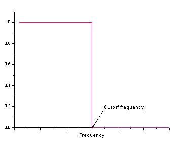
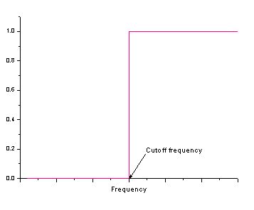
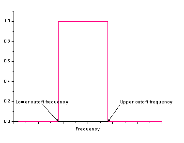
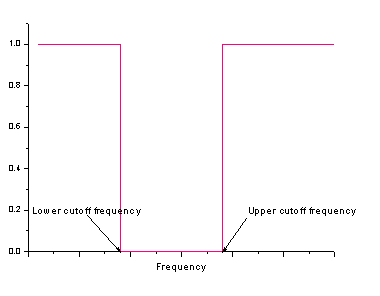
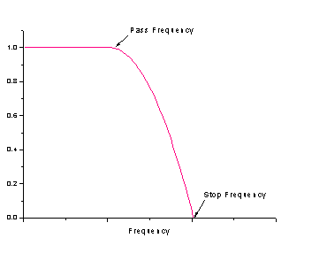
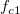
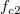
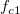
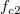

- 
- 
- 
- 
- 
 をパスの周波数にし、  を終了周波数にします。窓関数は次式となります。
/math-12499af734a33e4294044e046b5ad361.png "w(f)=\begin{cases}1,f\leq f_{c1}\\1-\frac{(f-f_{c1})^2}{(f_{c2}-f_{c1})^2},f_{c1}<f<f_{c2}\\0,f\geq f_{c2}\end{cases}")
最初に入力信号のフーリエ変換が計算されます。そして、変換されたデータが周波数領域にて処理されます。最終的に、逆フーリエ変換で変化した周波数が時間領域で信号に再変換されます。
データ変換処理に応じた様々な種類のフィルターが適用され、結果様々なフィルタ効果を発揮します。
ローパス、ハイパス、バンドパス、バンドブロック、パラボリックローパスの各フィルタに対しては、下記の表のように、フィルタの種類によって決まるウィンドウがフーリエ変換の掛け算に使われます。
| ローパス |
|
|---|---|
| ハイパス |
|
| バンドパス |
|
| バンドブロック |
|
| Low Pass Parabolic |
 をパスの周波数にし、  を終了周波数にします。窓関数は次式となります。
|
DCオフセットを保持オプションは変換データの掛け算に使われたウィンドウに作用します。チェックボックスが選択されていると、ウィンドウの最初の点が1にセットされます。
しきい値フィルタが使われている場合、入力信号にフーリエ変換が実行された後、各周波数成分のパワーが調べられます。値より大きくない場合、対応する周波数成分が破棄されます。そうでなければ保持されます。全ての周波数成分を調べた後、変更された周波数に逆フーリエ変換が実行されます。